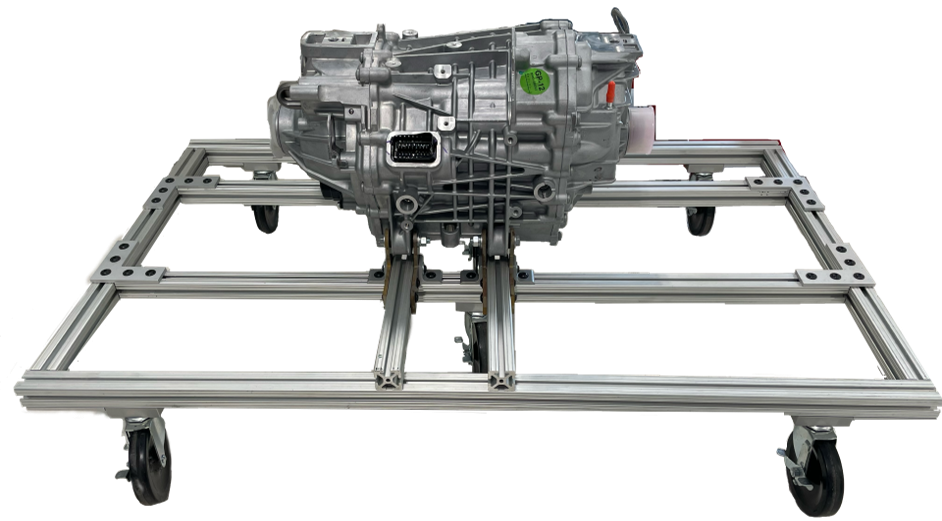

Image of the Motor on the Motor Mount
To ensure the frame was able to hold the motor, multiple 3D models were created using SolidEdge. The primary needs for the frame were: to be able to support the motor’s weight of approximately 200 lbs; able to support the torque generated by the motor; have easy access to the motor; conveniently fit through a standard door; and be modifiable. The frame was constructed using 80/20 components with some parts being made using ¼ inch steel.
Simulation of the Frame
Most parts were purchased off the shelf, but we used a waterjet cutter to cut a ¼” steel plate into 4 L shaped supports for one side of the motor. To cut these we used the ProtoMax waterjet which is capable of cutting up to 12” by 12” material up to 1” thick.